1) Assemble our 3D printers and document the process here:
In order to assemble my 3D printer (Creality Ender Pro 5 with Silent Board), I watched this YouTube video, and followed the process noted in the manual (2hrs).
I proceeded by printing several failed attempts of this test patterns that I thought were due to bed leveling, loose screws, and improper extrusion (3hrs)!
Once I was able to print a bed level test, I wanted to print the pre-loaded lucky cat! Several hours of failed attempts and browsing Reddit later, I realized that my 3D printer needs a firmware update to change zstep/mm to 800, and fix several other bugs, but I didn’t have a Mini-USB … Who uses Mini-USB anymore Creality?!?
Many hours (4+) later, I happily printed the lucky cat model (some failed attempts next to my lucky print).
2) Using Rhino and Cura create, print, and document the following tests:
- A 2cm cube with the standard 'low quality' settings and a brim
- A 2cm cube with the standard 'standard quality' settings and a brim
- A 2cm cube with the standard 'high quality' settings and a brim
- A 2cm cube with a concentric top and bottom layer
I decided to create my shapes based on the PacMan game characters, so first step was importing this PacMan family photo!
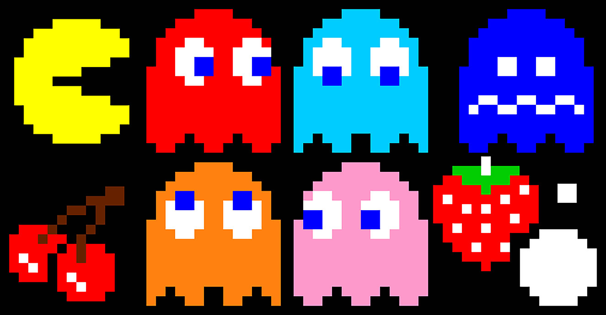
From here, I blew up the image size, grabbed screenshots of my favorite characters, and imported them into Adobe Illustrator shown below:
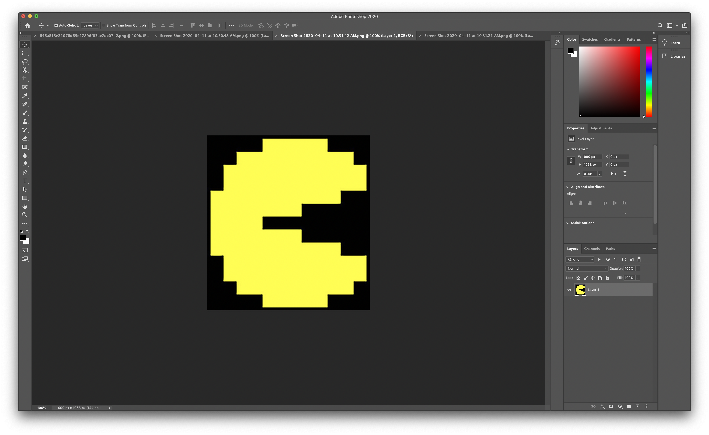
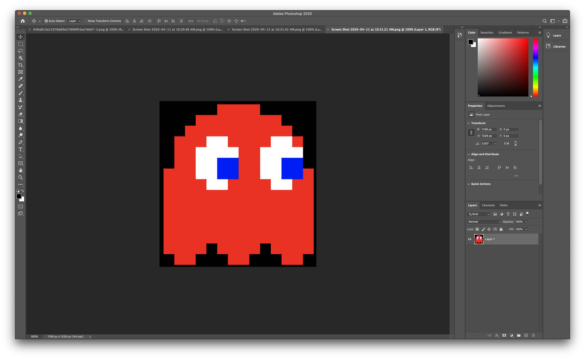
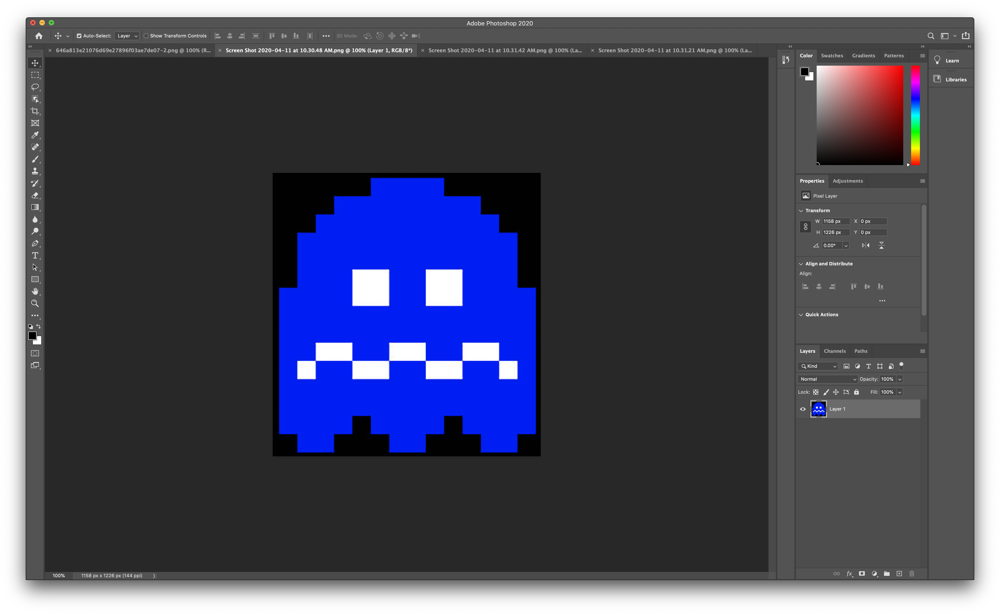
I continued that by turning the images to B&W and tracing them like shown below. Adobe illustrator files
Micro steps taken here were: Invert color + Selective coloring + Levels + B&W + Contrast + Filter->Blur + Image trace
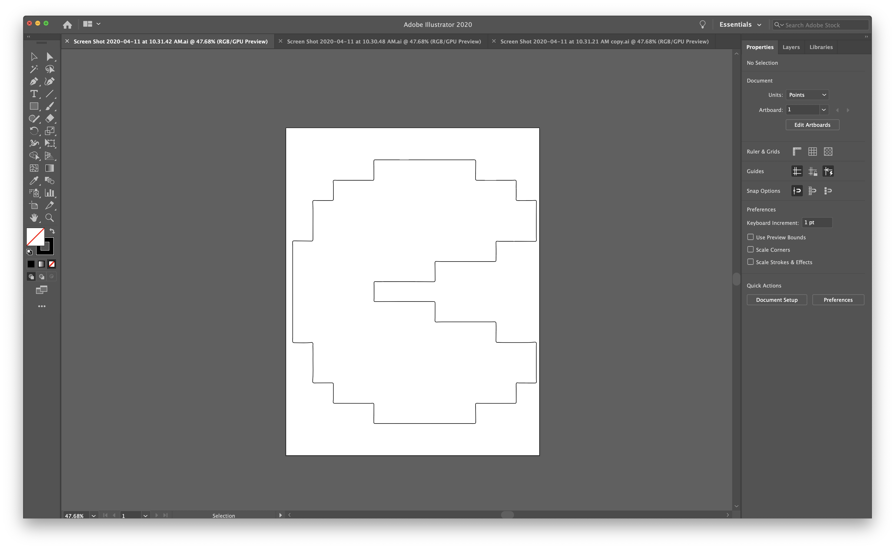
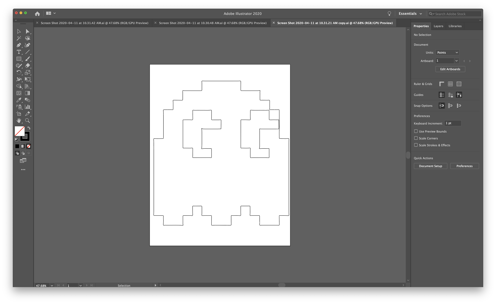
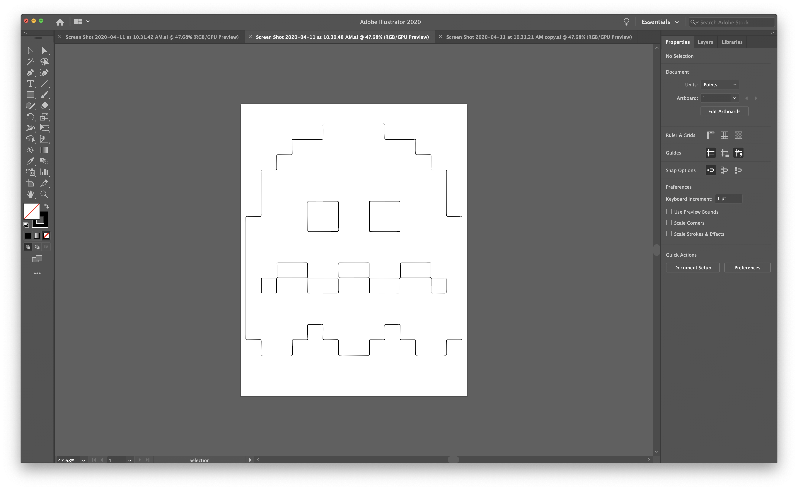
Once the images were traced, I exported them as dxf files to use in Rhino! They looked like these in Rhino:
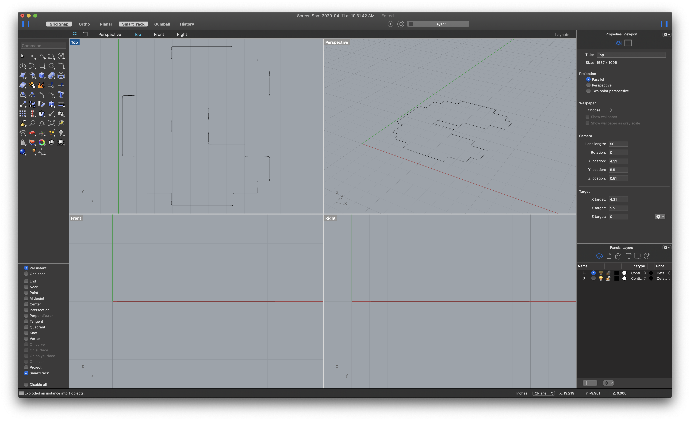
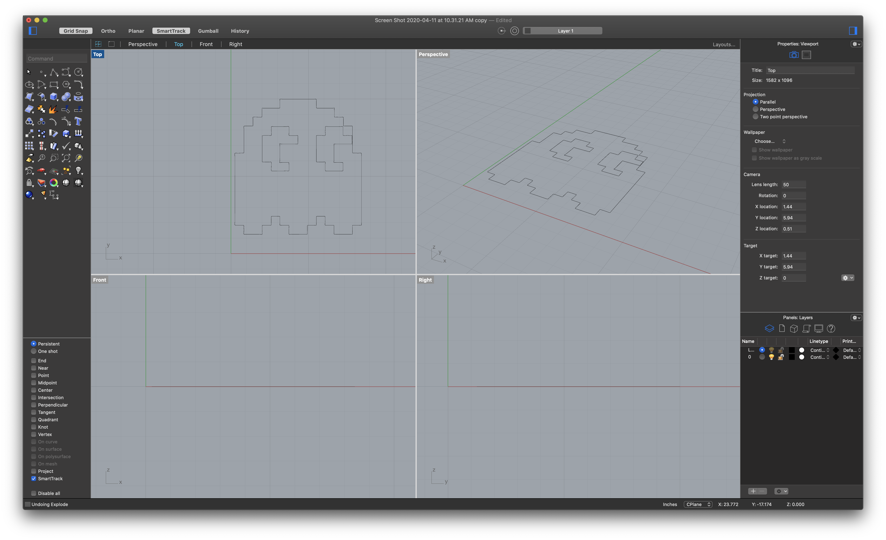
But I somehow didn’t like how they turned out with the pixelated look, so I “exploded” and “Rebuilt” my models with fewer points and started moving the curves around to create some interesting shapes that I liked.
Once I was happy with everything I turned them into solid models files shown here:
3dm files and
.stl files
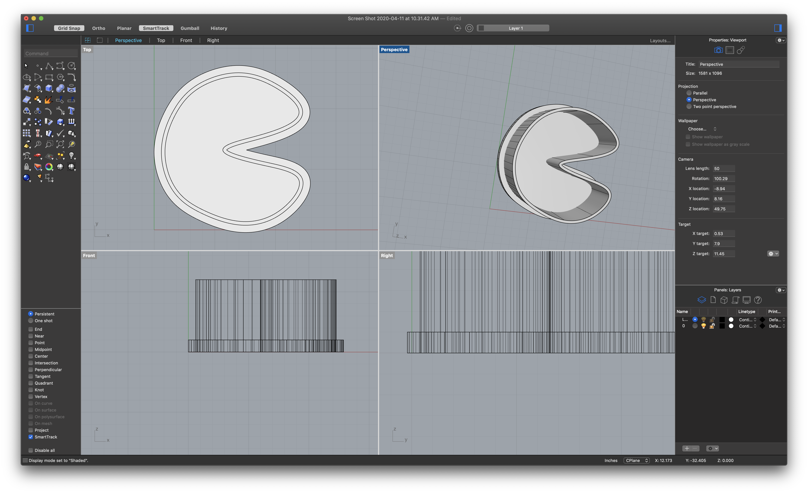
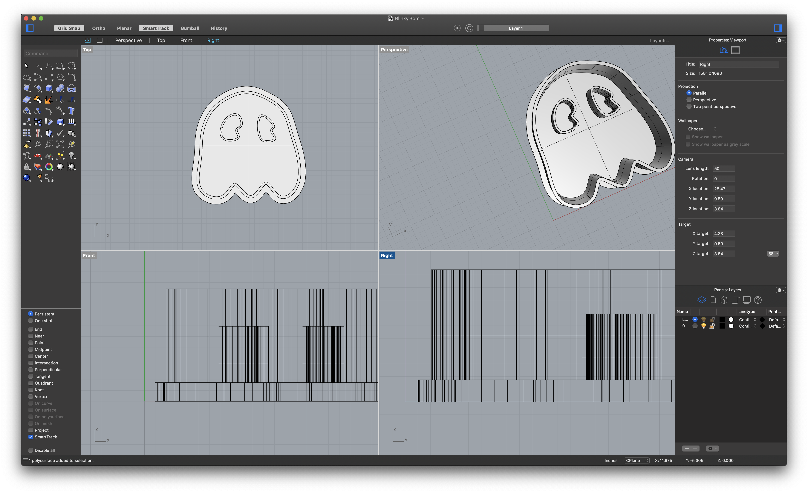
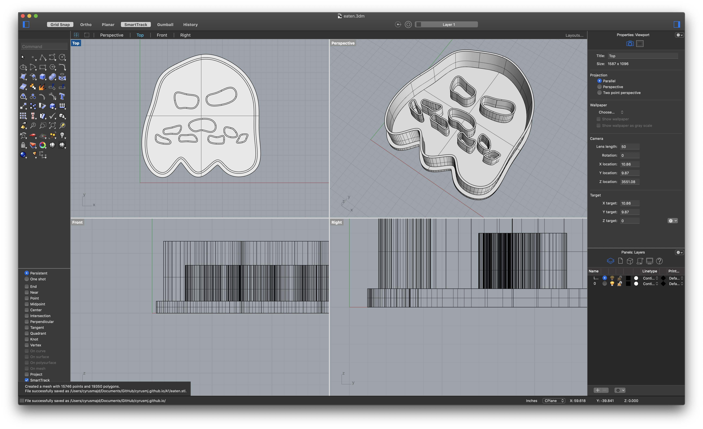
And now they’re 3 happy cookie cutters ready to be 3D printed. Here's a picture of them posing for another family photoshoot! Here's a link to the family photo file for your download :)
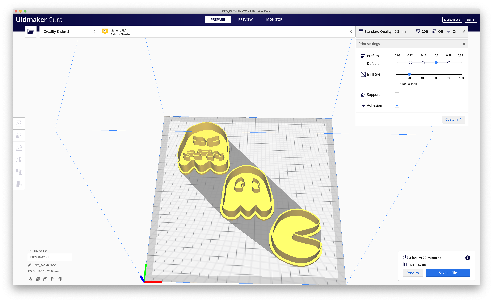